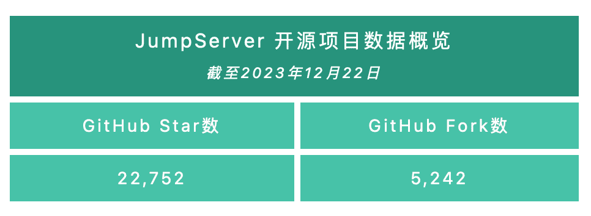
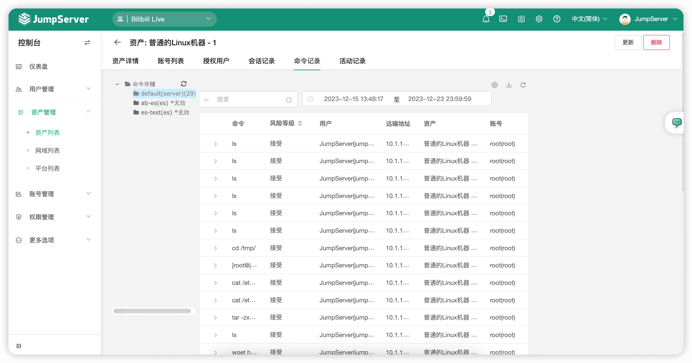
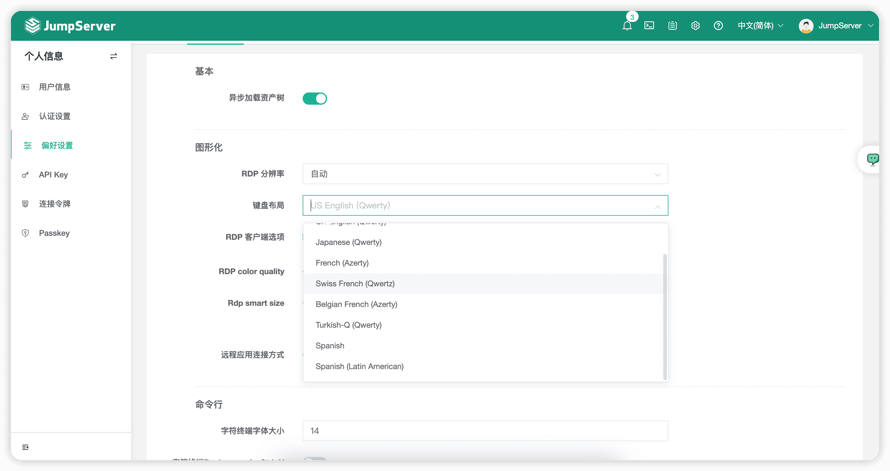
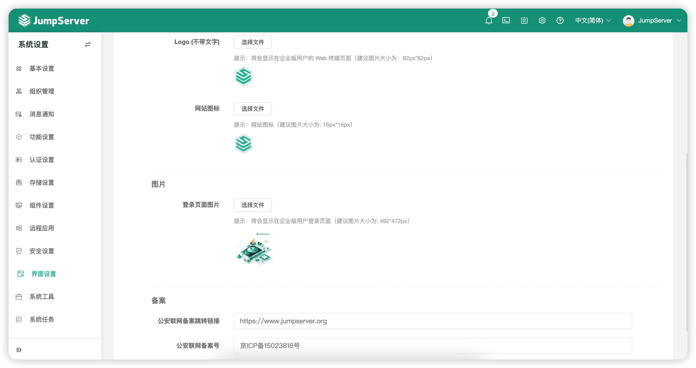
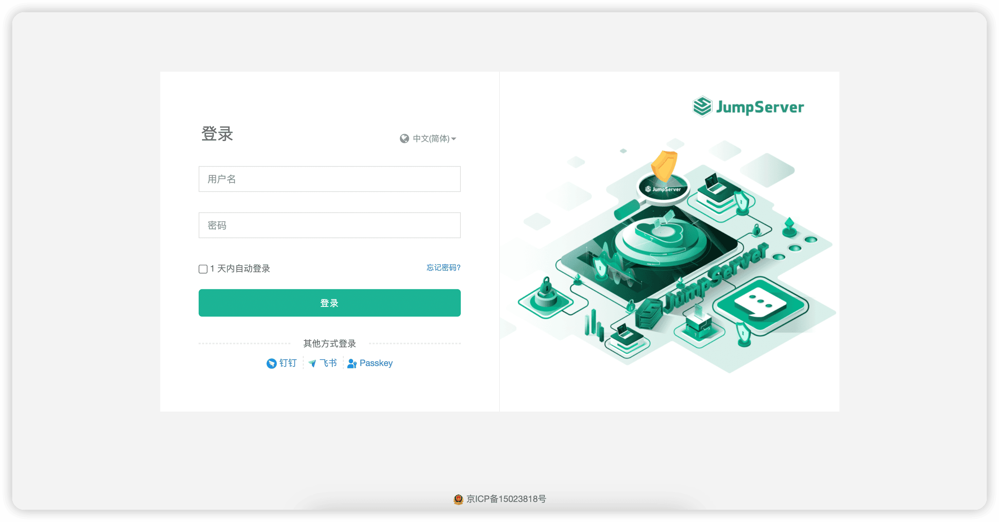
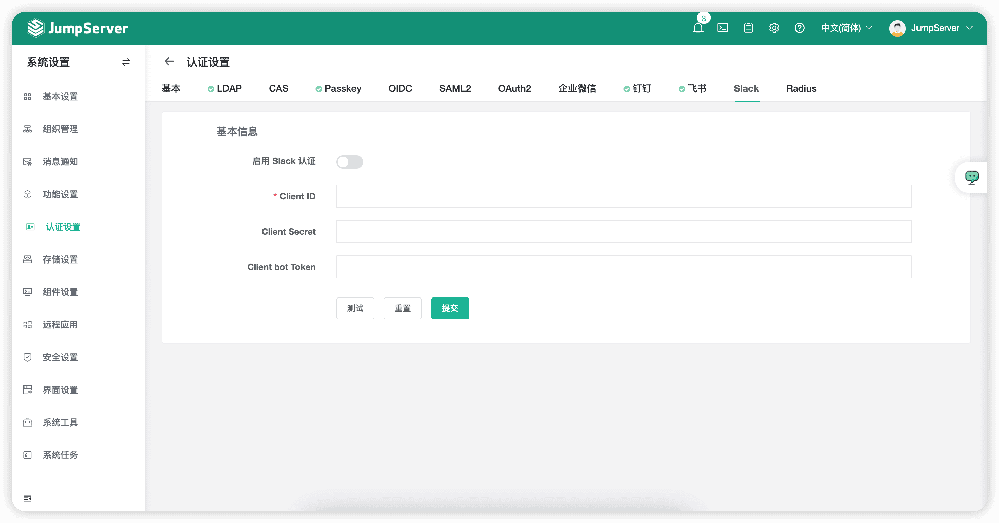
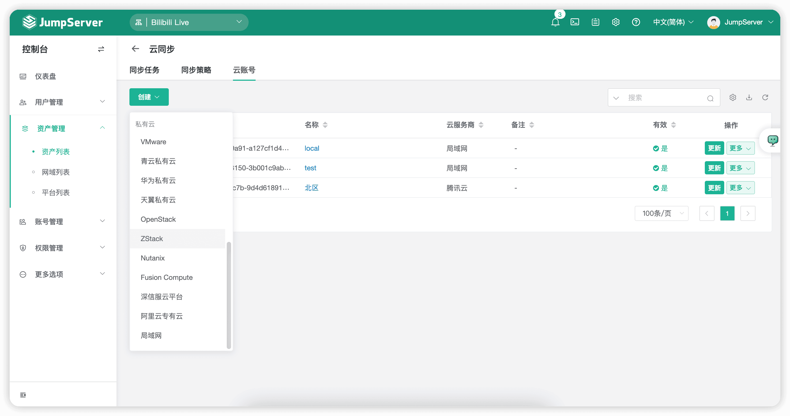
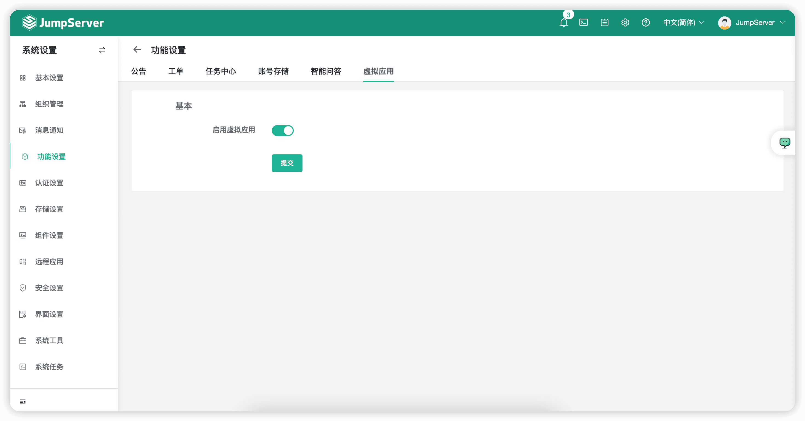
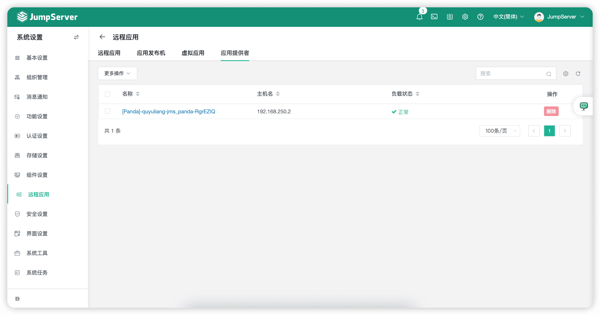

2023年12月25日，JumpServer开源堡垒机正式发布v3.10 LTS（Long Term Support）版本。JumpServer开源项目组将对v3.10 LTS版本提供长期支持，定期迭代发布小版本，持续进行问题修复更新并针对部分功能进行优化。欢迎广大用户升级使用v3.10 LTS版本。在这一版本中，JumpServer重构了“标签”功能，支持全局标签管理，赋予了“标签”更为灵活、更为强大的功能。从JumpServer v3.10.0版本开始，“标签”不仅能绑定到资产上，还能够绑定到其他资源上，让其他资源通过“标签”功能拥有额外的功能属性。同时，JumpServer新增Chat AI小助手功能，支持对接ChatGPT，实现了多个用户可以在JumpServer浏览器功能界面直接与ChatGPT进行对话的能力，极大地提高了用户的使用率及工作效率。
另外，“账号收集”功能支持将远程服务器中不存在的账户进行同步删除；“文件管理”功能支持批量传输文件，将批量命令和批量传输文件集中到工作台界面。这样一来，管理员可以让资产功能以更加方便的方式直接暴露给用户使用。
X-Pack增强包方面，JumpServer支持第三方客户端直连SQL Server数据库，支持Slack平台的用户认证及消息通知功能。同时，新版本JumpServer还支持配置备案信息至登录页面，支持使用Linux系统作为远程应用发布机。
新增功能
1. 支持全局标签管理
在JumpServer v3.10 LTS版本中，对“标签”功能进行了重构，支持全局标签管理，抛弃了过去“标签”只能归属到资产上的概念，真正做了到“万物皆可绑”。这样一来，每个资源都可以通过该功能灵活地打上“标签”，赋予了“标签”更为灵活、更为强大的功能，同时管理员也能够更加直观地为具有相同属性的资源进行分类。

▲ 图1 标签管理界面▲ 图2 标签关联资源界面
2. 新增Chat AI小助手功能
JumpServer v3.10 LTS版本发布了Chat AI小助手功能。管理员可以选择“系统设置”→“功能设置”，在此对接ChatGPT服务，启动Chat AI小助手功能。通过Chat AI小助手，用户就可以直接在JumpServer的主界面直接进行智能问答，更加便捷地解决了客户对未知问题的处理需求，大幅提升了用户的使用率以及工作效率。
▲ 图3 配置Chat AI小助手功能
▲ 图4 Chat AI小助手入口（ChatGPT）
3. 支持同步删除远程服务器中的账号信息（账号收集功能）
在JumpServer v3.10 LTS版本中，“账号收集”功能增强了对远端资产账号的控制。通过“账号收集”功能，管理员不仅可以将远端资产的账号同步到JumpServer中，还可以直接将双方（JumpServer和远端资产）的账号进行同步删除。
▲ 图5 支持同步删除远程服务器中的账号信息
4. 新增批量文件发送功能
在JumpServer v3.10 LTS版本中，“文件管理”模块新增文件的批量发送功能，提升了用户在“工作台”界面对资产的可操作性。
▲ 图6 新增批量文件发送功能
5. 用户详情支持查看该用户连接的资产会话信息
在JumpServer v3.10 LTS版本中，管理员可以在“用户管理”→“用户列表”页面点击用户名称查看用户详情，并且在“用户会话”页面查看该用户连接资产的会话记录。
▲ 图7 用户详情支持查看该用户连接的资产会话信息
6. 资产详情支持查看历史命令执行记录
在JumpServer v3.10 LTS版本中，管理员可以在“资产管理”→“资产列表”页面查看资产详情，并且在“命令记录”页面查看所有用户连接该资产的命令记录。
▲ 图8 资产详情支持查看历史命令执行记录
7. 键盘布局新增Spanish、Spanish（Latin American）选项（Luna组件）
在JumpServer v3.10 LTS版本中，在“个人信息”→“偏好设置”页面中，连接图形化资产的键盘布局新增Spanish和Spanish（Latin American）选项，新增支持西班牙语，方便更多国际用户使用JumpServer。

▲ 图9 键盘布局新增Spanish、Spanish（Latin American）选项8. Luna页面多个会话支持使用快捷键切换（Option+Left/Right）
在JumpServer v3.10 LTS版本中，当用户在Web Terminal界面开启多个会话时，可以使用快捷键“Option+Left/Right”快速跳转至下一个会话，有效提升运维效率。
9. JumpServer Client支持苹果系统签名认证
在JumpServer v3.10 LTS版本中，JumpServer客户端Mac版本支持对苹果系统的签名认证，安装签名认证时将不再提示错误信息。
10. 新增公司备案信息配置功能（X-Pack增强包内）
在JumpServer v3.10 LTS版本中，新增公司备案信息配置功能。管理员可以在“系统设置”→“界面设置”页面中配置备案信息，备案信息将显示在JumpServer登录页面的下方。

▲ 图10 新增公司备案信息配置功能（X-Pack增强包内）
▲ 图11 公司备案信息显示界面（X-Pack增强包内）11. 新增Slack用户认证和消息通知功能（X-Pack增强包内）
在JumpServer v3.10 LTS版本中，新增对接Slack平台，支持用户直接使用Slack平台登录到JumpServer。同时，站内信通知的消息也可以同步发送到Slack对接的JumpServer应用频道中。

▲ 图12 新增Slack用户认证和消息通知功能（X-Pack增强包内）12. 新增支持深信服云平台、阿里云专有云和ZStack云平台（X-Pack增强包内）
在JumpServer v3.10 LTS版本中，“云同步”模块新增支持3个云资源平台，分别是深信服云平台、阿里云专有云和ZStack云平台。
目前，JumpServer已实现了对阿里云、腾讯云、华为云、百度云、京东云、AWS（中国）、AWS（国际）、Azure（中国）、Azure（国际）、谷歌云、VMware等在内的22种云平台的支持，用户可以通过云同步任务自定义匹配策略，更灵活地同步云资源到JumpServer中，满足了更多企业用户的多云管理需求。

▲ 图13 “云同步”模块新增支持深信服云平台、阿里云专有云、ZStack云平台（X-Pack增强包内）13. 支持通过本地客户端连接SQL Server数据库（Magnus组件）（X-Pack增强包内）
在JumpServer v3.10 LTS版本中，用户可通过本地第三方客户端连接SQL Server数据库，针对SQL Server数据库的连接方式，为用户增加了更多的选择。
14. 新增虚拟应用功能，支持Linux系统作为远程应用发布机（Panda组件）（X-Pack增强包内）
JumpServer v3.10 LTS版本对远程应用发布机进行了拓展，支持使用Linux系统作为其运行载体。管理员需要在“系统设置”→“功能设置”中开启“启动虚拟应用”选项，在“远程应用”页面中刷新即可看到“虚拟应用”等配置项，进行相应配置即可。

▲ 图14 开启虚拟应用功能（X-Pack增强包内）
▲ 图15 在“远程应用”页面中进行相应配置功能优化
■ 优化LDAP认证配置的相关操作，使用WebSocket协议替换HTTP协议发送请求；
■ 优化用户访问，需要跳转URL时进行安全性检测；
■ 优化作业中心，支持对配置网域的数据库批量执行命令；
■ 优化所有API接口返回资源总数的计算逻辑；
■ 优化账号改密、账号推送任务，账号密码支持设置除“{{”开头和“}}”结尾以外的任何特殊字符；
■ 服务端点Host支持配置IPv6地址；
■ 优化远程应用账号选择策略，不随机选择“js_”开头的账号（“js_”开头的账号为用户个人专属账号）；
■ 优化资产列表，支持通过创建日期进行排序；
■ 优化系统任务，支持显示“执行周期”、“下次执行开始时间”等信息；
■ 优化不支持录像的会话，在错误信息字段中显示具体原因；
■ 获取客户端访问IP信息仅从X-FORWARDED-FOR中获取；
■ 优化RDP Client会话连接时的高级选项，支持session bpp:i参数设置（默认为32，此选项为配置显示颜色的色深）；
■ 优化自动禁用用户功能，默认排除Admin用户；
■ 优化部分操作日志的记录，进一步优化授权中的动作显示、一键添加用户到用户组等；
■ 管理员给用户组添加全部用户时需要进行二次确认；
■ 优化快捷命令发送到会话的设置，支持选择发送范围（当前会话、所有会话）（Luna组件）；
■ 优化使用Web GUI方式连接MySQL数据库的设置，支持禁用自动补全功能，提高数据库的加载速度（Chen组件）；
■ SSH终端连接资产再退出时，显示上次搜索的结果（KoKo组件）；
■ 优化兼容MobaXterm软件打开软连接目录的问题（KoKo组件）；
■ 对执行SQL和导出SQL查询结果的命令记录进行区分（Chen组件）；
■ 优化工单处理提示消息页面（X-Pack增强包内）；
■ 优化批量执行MySQL命令的工单审批逻辑（Chen组件）（X-Pack增强包内）。
Bug修复
■ 修复远程应用不能更新的问题；
■ 修复自动禁用非活跃用户的判断逻辑；
■ 修复连接开启SSL的Redis资产时，提示WebSocket连接失败的问题；
■ 修复MySQL数据库资产开启、再关闭SSL后，测试可连接性失败的问题；
■ 修复远程应用账号标记和释放逻辑，解决了首次连接远程应用可能出现没有可用账号的问题；
■ 修复登录第三方不存在的用户时，会新增一条异常改密日志的问题；
■ 修复ARM版离线包缺少freerdp2-dev依赖的问题，解决使用自动化方式为freerdp时，Windows类型资产测试连接不通过的问题；
■ 修复Web SFTP连接资产时，刷新页面显示一些不存在的文件的问题（KoKo组件）；
■ 修复连接MySQL资产后，可以执行系统命令的问题（KoKo组件）；
■ 修复双击数据表无法查询数据的问题（Chen组件）；
■ 修复配置Logo后，移动端不显示的问题（X-Pack增强包内）；
■ 修复华为云同步资产只能同步20个的问题（X-Pack增强包内）；
■ 在华为云同步测试账号是否可用时，修复默认使用CN_NORTH_1区域总是失败的问题（X-Pack增强包内）；
■ 修复使用Oracle 10的用户无法连接Oracle 12版本数据库的问题（Magnus组件）（X-Pack增强包内）。